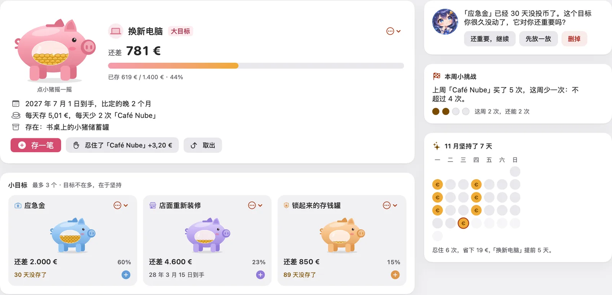
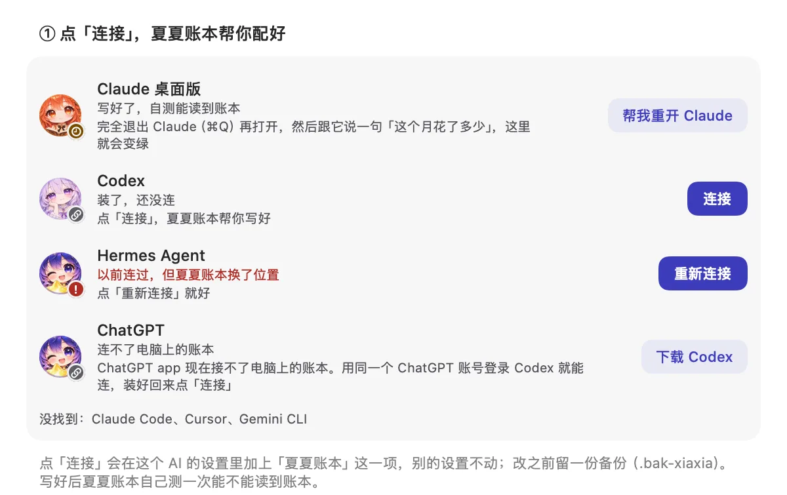

Novedades
Qué ha cambiado en cada versión, explicado con claridad. La app instalada avisa abajo a la izquierda cuando hay versión nueva; un clic la actualiza.

Hucha dorada, apuntes rápidos en el móvil y conexión con la IA en un clic
La página Objetivos es ahora una hucha dorada; en el móvil puedes apuntar algo al momento, fotografiar un tique y llevar tus gastos a reembolsar; conectar una IA es un solo clic.
- La página Objetivos se ha rehecho como una hucha dorada: 1 objetivo principal y hasta 3 pequeños. Xiaxia calcula cuánto ahorrar al día y cuándo lo tendrás. Meter dinero, aguantarte una compra o sacar dinero se hace tocando la hucha.
- Apuntes rápidos en el móvil: abre y apunta, fotografía un tique y usa la nueva página de reembolsos para ver qué falta por presentar y qué está pendiente de cobro. iPhone y Mac se sincronizan solos con iCloud.
- La página Tendencias responde ahora a «si sigo gastando así»: cuánto te quedará más o menos a fin de mes y a fin de año, y cuánto más tendrías reduciendo a la mitad algunas categorías.
- Conectar una IA es más fácil: cada IA tiene un botón Conectar que después comprueba si puede leer el libro. Para otras IA, copia un texto y se configura sola.
2 cambios más
- Tras actualizar, la app te cuenta qué ha cambiado y comprueba si hay versión nueva cada vez que se abre. La web tiene una página de novedades y versiones en inglés y en español.
- La interfaz empieza a estar disponible en inglés y español, en Ajustes → Privacidad y apariencia → Idioma. El chino sigue siendo el idioma por defecto y algunas partes, como los comentarios de Xiaxia, aún no están traducidas.





Versiones anteriores
0.2.4Página de patrimonio renovada: mira cuánto puedes gastar ahora mismo
Abre Patrimonio y el número más grande es el dinero que puedes gastar hoy con libertad, y para cuántos meses te llega.
- El número más grande es «puedes gastar ahora»: el ahorro total menos lo que necesita la tienda, lo que guardas y lo que debes. El resto es tuyo.
- Debajo ves para cuántos meses alcanza, según tu propio gasto mensual; si tienes un libro de negocio solo cuenta el gasto personal.
- El ahorro total es ahora una barra gruesa de colores, un color por parte, con tarjetas debajo que indican qué cuentas y objetivos hay en cada una.

Página Patrimonio: la cifra grande es lo que puedes gastar libremente, con una barra de colores que reparte tu dinero (datos de ejemplo) 0.2.3Nuevo apartado «Datos» en Ajustes: prueba una demo, borra datos, recupera una copia
Mira cómo queda cada página con datos antes de apuntar nada; antes de borrar siempre se hace una copia, así que un error tiene arreglo.
- Datos de demostración: recorre cada página con un año de apuntes inventados. Toca y cambia lo que quieras; al salir vuelve tu propio libro.
- Borrar datos: puedes borrar solo una parte o todo. Antes se guarda una copia del libro.
- Recuperar una copia: elige una de las copias guardadas antes de actualizar o de borrar.

La sección Datos en Ajustes: ver datos de ejemplo, borrar datos (datos de ejemplo) 0.2.2Gastos, Tendencias y Patrimonio renovadas; nuevas páginas de Objetivos, Suscripciones y Deudas y plazos
Las páginas de dinero se han reorganizado para caber en una pantalla, y hay tres páginas nuevas para objetivos de ahorro, suscripciones y deudas.
- Gastos ahora compara con el mes anterior; cambia entre tarta y barras con un clic.
- Nuevo selector de meses: ves de un vistazo qué meses fueron fuertes o flojos y saltas a ellos con un clic.
- Objetivos indica si ahorras al ritmo necesario, Suscripciones encuentra las que te hacen perder dinero y Deudas y plazos ordena lo que debes y lo que te deben.
- Al apuntar desde la foto de un tique se usa la fecha del tique, no la de hoy.

Página Gastos: este mes junto al anterior (datos de ejemplo) 0.2.1Xiaxia ya tiene versión chico y recuerda tus costumbres
Al abrirla por primera vez puedes elegir el juego de chicas o de chicos y poner nombre a tu asistente; Xiaxia también empieza a tomar notas.
- Xiaxia y sus tres compañeros tienen versión chico. Elige al abrirla por primera vez y cámbialo cuando quieras en Ajustes.
- Puedes cambiar el nombre del asistente y cómo te llama.
- Memoria de Xiaxia: guarda las reglas que pones y tus costumbres. Puedes verlas y editarlas en Ajustes → Memoria de Xiaxia.
- Nuevo icono de la app: la cara de Xiaxia.

0.2.0La primera versión que se puede descargar
Descárgala directamente desde la web. Está certificada por Apple, así que se abre con doble clic, y la app te avisa cuando hay versión nueva.
- Descarga el dmg desde la web y arrástralo a Aplicaciones.
- Al abrirla por primera vez te guía para conectar tu propia IA (Claude, Codex y otras); para apuntar algo, díselo.
- Cuando hay versión nueva aparece un aviso abajo a la izquierda; un clic actualiza, y antes se hace copia del libro.